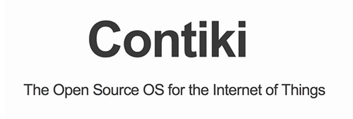

CONTIKI COOJA
Contiki is an operating system for IoT that specifically targets small IoT devices with limited memory, power, bandwidth, and processing power.
It uses a minimalist design while still packing the common tools of modern operating systems.
It provides functionality for management of programs, processes, resources, memory, and communication.
Cooja, the Contiki network simulator, spawns an actual compiled and working Contiki system controlled by Cooja.
